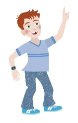
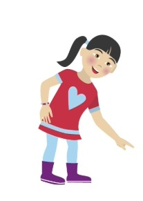

1 / 8
Controle van het geluid
Werkt het niet? Meld dit aan je docent.
Luisteren naar de uitleg


Opgave 1
Splits 13 in twee delen. Het eerste deel is 6. Wat is het tweede deel
Opgave 2
Reken uit, 7 plus 6, 2 eraf is hoeveel
Opgave 3
De grote wijzer staat op 6, de kleine wijzer staat tussen 3 en 4. Hoe laat is het
Opgave 4
Lees, De poes slaapt op de mat. Waar ligt de poes
Opgave 5
Een appel kost 35 cent, een banaan kost 50 cent. Hoeveel cent samen
Klaar
Goed gedaan. Je hebt alle vijf de opgaven gemaakt.
Jouw score, 0 / 5